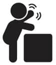

İnsanlık için küçük, bebek için büyük bir adım
Bu çocuk milletinden anne babanın beklentisi hiç bitmez. Önce, hadi artık doğsa, dersin, doğar. Aaah bir kırkı çıksa, dersin, çıkar. Bir gülmeye başlasa, dersin, bakar, güler. Bir otursa, dersin, oturur. Bir emekleyeme başlasa, dersin, emekler. Bir yürüse, dersin, yürür. Bir otursa, dersin, bir otursa, ahhh birazcık otursa, ne olur azıcık otursa, oturmaz! Yürümenin tadını alan insan evladı bir daha oturmaz…
Oturabilmesi, emekleyebilmesi, sıralayabilmesi, yürüyebilmesi için bu küçük insanlara biraz destek çıkmak gerekiyor. Oturan ve emekleyen çocuğa sınır koymak için oyun parkları iyi. Örneğin, sen mutfağa gittiğinde bebeği oyun parkının içine bırakabilirsin, yanına da birkaç oyuncak verirsin. Muhtemelen on dakika sonra ağlar. Ama olsun. Sen mutfaktayken parmağını çekmeceye sıkıştırıp ya da sandalyeyi tepesine düşürüp ağlamasından ya da hâlâ kaldırmadıysan süs bitkilerinin yapraklarını yiyip kusmasından daha iyidir.
Emekleyen bebekler için emekleme yardımcısı oyuncaklar var. Oyuncak önden gidiyor, seninki peşinden. Ama emekleme konusunda çok çabuk hız kazanıyorlar, oyuncağı kim takar. Onun emeklediği sürelerde senin hijyen mevzuuna biraz daha dikkat etmen gerekiyor. Sonuçta çocuk elleriyle yürüyor. Aynı zamanda diş de çıkarttığı için elleri hep ağzında. Sonra ishal oluyor; olur tabi, pis. Bebek sıralamaya başladığında (sıralamak da neyse) nerede sıraladığına dikkat et. Koltuklar bu işler için ideal. Ama mesela orta sehpayı önermem. Sonuçta henüz ayaklarının üzerinde tam olarak duramıyor ve tak diye çöküyor. O çöküş anında çenesini vuruyor ve minicik dişleri dudağını kesiyor.
Yürüme yardımcısı oyuncaklar keyifli. Bu iş için çocuğun tutup itebileceği arabalar, bisikletler falan var. Elinden tutup yürütmek bir çözüm tabi. Ama arabayı kendisi kullanıyor. Güven meselesi… Yürümeyi çözdükten sonra yapabileceğin bir şey yok. Bebek mağazalarında, dışarıya çıktığınızda kullanalım diye, çocuklar için tasmalar satılıyor. Eşim aldırmadı, bu çocuğa bir çeşit hayvan muamelesi yapmakmış. Bence fonksiyon açısından bebek arabasından ya da kangurudan bir farkı yok. Çocuk yürüsün ama ipler senin elinde olsun. Bence alışveriş merkezinde ya da yolda yürürken çocukla kovala, yakala, elimi tut, sana elimi tut, dedim, yavrum elimi tut oynamaktan daha iyi fikirdi.
Çocuklar genellikle bir yaşına geldiklerinde ufak ufak adımlar atmaya başlıyorlar. Ama bak sana ne anlatacağım: Name 16 aylıktı ve tek bir adım atmamıştı. Emeklemiyordu da üstelik. Poposunun üstünde hareket ederek istediği yere gidip gelebiliyor. Name, bu hızlı hareket kabiliyetini, emeklemek, sıralamak, yürümek gibi bir rutine uymaya tercih etti. Grip aşısı için doktora gittiğimizde Name’nin yürümüyor olması üzerine konuştuk. Bana kalsa 18 ayı beklerdim.
Doktorumuz gelin birtakım tetkikler yapalım, gözden bir şeyi kaçırmayalım, yürümüyor, tutunup kalkmıyor, emeklemiyor, kendi kendine olduğu yerde dönemiyor, bu işi bir araştıralım dedi. Doktorumuza çok güvenmiyor ve sevmiyor olsam, sanırım konuyu birkaç ay daha sallardım. Tamam, dedim, söyleyin ne yapacağız? Çocuk nöroloğu görsün dedi. Ama Cumhurbaşkanı görsün deseydi muhtemelen daha kolay randevu alırdım. Üç ay sonrasına randevu veriyorlar.
(Hastane değil, muayenehane!) Ruhumdaki bütün sevimliliği sesime yansıtarak o gün için randevu almayı başardım. Bir sürü kan ve idrar tahlili istediler. Erkek çocuktan idrar numunesi almak nispeten kolay, poşeti takacak bir şey var sonuçta! Ve fakat kız çocuklar için durum çok zor. 5 gün laboratuvara gittik geldik. Sonunda yeterli miktarda idrarı verdik. Kemik gelişimini görmek için film çektirdik vs. Oldukça zahmetli bir tetkik sürecinden sonra bir sorun olmadığını gördük. Sakin çocuk, hareketi de sevmiyor. Bu olaydan on gün sonra ufak ufak adımlar atmaya başladı.
En nihayetinde yürüdü. 17 aylıkken adımladı, 18’inde yürüdü, 20-21’de hızlı yürümeye başladı, 2. yaş gününü beklediğimiz günlerde kendisinin maratona hazırlandığını düşünüyorduk. Çocuğum içine atmış yürüyemediği günleri. Hani çocuğa bezi bıraktırırsın, emziği bıraktırırsın ya, Name de yürümeye başlayınca bebek arabasını bıraktı. İkizlerde bebek arabasını daha uzun süre kullanmıştım, öyle gezmek biraz daha kolay oluyordu. Fakat Name’yi mümkün değil oturtamıyoruz.
Bir yere gittiğimizde bizim elimizi tutmak yerine abilerinin elini tutmayı tercih ediyor. Nereye gittiğinden emin olmayan, adımlarını birbirine uyduramayan, daha kendini kontrol edemezken kardeşini kontrol etmek zorunda kalan el ele tutuşmuş üç küçük insan yürüyor önümde. Sürekli düşüyorlar, kalkıp yeniden el ele tutuşabilmeleri hayli zaman alıyor, bir anda dağılıyorlar, sonra tekrar birleşiyorlar falan. Ne yalan söyleyeyim, bazen hayvanlara özeniyorum. Doğuruyorlar, birkaç saat sonra yavrularını arkalarına katıp istedikleri yere gidebiliyorlar, yavrucuk tıpış tıpış anasını takip ediyor. Arkadaş, 3,5 yıl oldu hâlâ önüme katıp, durun, dikkat edin, düşmeyin, demeden gönlümce gezemedim!